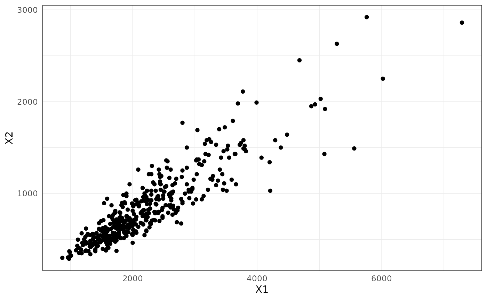
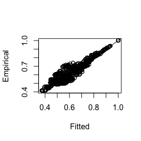
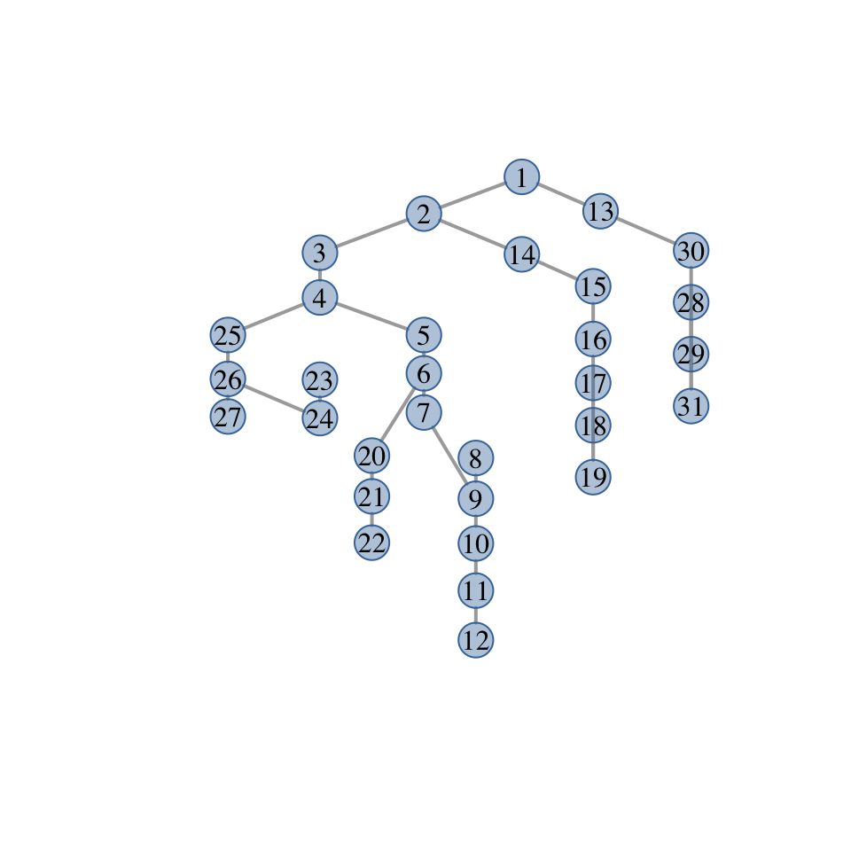

vignettes/graphicalExtremes.Rmd
graphicalExtremes.Rmd
danube = graphicalExtremes::danube
X = danube$DataEvents
ggplot2::ggplot(X %>%
as_tibble()) +
geom_point(aes(x = X1, y = X2))
The goal is to study the extremal tail of a multivariate random vector \(\mathbf{X} = (X_1,\dots, X_d)\). Here, we are interested only in the extremal dependence and therefore normlaize the marginal distributions \(F_j\) of \(X_j\) to standard Pareto distributions by \[\begin{equation} 1 /\{1- F_j(X_j)\}, \quad j=1,\dots, d. \tag{2.1} \end{equation}\] We assume in the sequel that the vector \(X\) has been normalized to standard Pareto margins.
A multivariate Pareto distribution (MPD) is defined as the limiting distribution the exceedances of \(\mathbf{X}\) over a high threshold, where the multivariate threshold is chosen in terms of the \(l_\infty\)-norm. For any \(u>0\), we define exceedance distribution as \[\begin{equation}\label{exc} \mathbf{X}_u = \mathbf{X} \mid \| \mathbf{X} \|_\infty > u \end{equation}\] By sending \(u\to \infty\) and normalizing properly, the random vector \(X_u\) converges to a limiting distribution \(Y\) called the MPD: \[ \mathbf{Y} = \lim_{u\to \infty} \mathbf{X}_u /u,\] where the limit is in terms of convergence in distribution. By construction, the distribution of the MPD \(\mathbf{Y}\) is defined on the space \(\mathcal L = \{\mathbf{x} \in [0,\infty)^d : \| \mathbf{x} \|_\infty > 1\}\), and if \(\mathbf{Y}\) possesses a density \(f_{\mathbf{Y}}\), then it is proportional to the so-called exponent measure density \(\lambda\); for details see Engelke and Hitz (2020).
In practice, we use the approximation \(\mathbf{Y} \approx \mathbf{X}_u\) for some large value \(u\), where \(u\) can be chosen as the \(p\)th quantile of the distribution of \(\|\mathbf{X}\|_\infty\). Given \(n\) oberservations \(\mathbf{X}_1, \dots, \mathbf{X}_n\) of \(\mathbf{X}\), the function first computes the standardization in (2.1) based on the empirical distribution functions \(\hat F_j\) and then selects the exceedances \(X_u\) according to .
Y <- data2mpareto(data=X, p = .8)Example 2.1 The extremal logistic distribution with parameter \(\theta\in(0,1)\) induces a multivariate Pareto distribution with density \[\begin{equation} f_{\mathbf{Y}}(\mathbf{y}) = \frac{1}{d^{\theta}} \left(y_1^{-1/\theta}+\dots+y_d^{-1/\theta}\right)^{\theta-d}\prod_{i=1}^{d-1}\left(\frac{i}{\theta}-1\right) \prod_{i=1}^{d} y_i^{-1/\theta-1}, \quad \mathbf{y} \in \mathcal L. \end{equation}\] The parameter \(\theta\) governs the extremal dependence, ranging from complete dependence for \(\theta\to 0\) and independence for \(\theta \to 1\).
Example 2.2 The \(d\)-dimensional Huesler–Reiss distribution (Hüsler and Reiss 1989) is parameterized by the variogram matrix \(\Gamma = \{\Gamma_{ij}\}_{1\leq i,j\leq d}\). The corresponding density of the exponent measure can be written for any \(k\in\{1,\dots, d\}\) as \[\begin{equation} \lambda(\mathbf{y}) = y_k^{-2}\prod_{i\neq k} y_i^{-1} \phi_{d-1}\left(\mathbf{\tilde y}_{\setminus k}; \Sigma^{(k)}\right), \quad \mathbf{y} \in \mathcal L, \tag{2.2} \end{equation}\] where \(\phi_p(\cdot; \Sigma)\) is the density of a centred \(p\)-dimensional normal distribution with covariance matrix \(\Sigma\), \(\mathbf{\tilde y} = \{\log(y_i/y_k) + \Gamma_{ik}/2\}_{i=1,\dots, d}\) and \[\begin{equation}\label{sigma_k} \Sigma^{(k)} =\frac{1}{2} \{\Gamma_{ik}+\Gamma_{jk}-\Gamma_{ij}\}_{i,j\neq k} \in\mathbb R^{(d-1)\times (d-1)}. \tag{2.3} \end{equation}\] The matrix \(\Sigma^{(k)}\) is positive definite and will play an important role in the theory of extremal graphical models. The representation of the density in (2.2) seems to depend on the choice of \(k\), but, in fact, the value of the right-hand side of this equation is independent of \(k\). The H"usler–Reiss multivariate Pareto distribution has density \(f_{\mathbf{Y}}(\mathbf{y}) \propto \lambda(\mathbf{y})\) and the strength of dependence between the \(i\)th and \(j\)th component is parameterized by \(\Gamma_{ij}\), ranging from complete dependence for \(\Gamma_{ij} \to 0\) and independence for \(\Gamma_{ij} \to \infty\).
The extension of H"usler–Reiss distributions to random fields are Brown–Resnick processes (Kabluchko, Schlather, and Haan 2009), which are widely used models for spatial extremes.
We can simulate from MPDs and the corresponding max-stable distribution using the function rmpareto() and rmstable(), respectively.
The extremal correlation \(\chi_{ij}\in [0,1]\) measures the dependence between the largest values of the random variables \(X_i\) and \(X_j\). It is defined as \[\begin{equation}\label{EC} \chi_{ij} = \lim_{p\to 1} \chi_{ij}(p) = \lim_{p\to 1} \mathbb P\left\{F_i(X_i) > p\mid F_j(X_j) > p \right\}, \end{equation}\] where the boundary cases \(0\) and \(1\) correspond to asymptotic independence and complete dependence, respectively.
For \(n\) observations \(X_1,\dots, X_n\) of the \(d\)-dimensional vector \(X\), we can empirically estimate the \(d\times d\) matrix of all pairwise extremal correlations for a fixed threshold \(p\) close to 1.
chi_hat <- emp_chi(data = X, p = .8)In this function, and in all subsequent functions, if the variable p = NULL (?? is this correct or other syntax) then the data is already expected to be on MPD scale, and no thresholding is performed. For the Danube date, we may therefore directly use \(\mathbf{Y}\) instead of \(\mathbf{X}\):
chi_hat <- emp_chi(data = Y) Example 2.3 For the Huesler–Reiss distribution with parameter matrix \(\Gamma = \{\Gamma_{ij}\}_{1\leq i,j\leq d}\), the extremal correlation is given by
\[ \chi_{ij} = 2 - 2 \Phi(\sqrt{\Gamma_{ij}}/2),\]
where \(\Phi\) is the standard normal distribution function. We can use the functions Gamma2chi() and chi2Gamma() to switch between the two coefficients.
There exist several other summary statistics for extremal dependence. The extremal variogram was introduced in and turns out to be particularly useful for inference of extremal graphical models discussed below.
For any root node \(k\in V\), the pre-asymptotic extremal variogram is defined as the matrix \(\Gamma^{(k)}\) with entries
\[\begin{equation*}
\Gamma_{ij}^{(k)}(p) = \mathop{\mathrm{Var}}\left[\log\{1 - F_i(X_{i})\}- \log\{1 - F_j(X_j)\} \mid F_k(X_k) > p\right], \quad i,j\in V,
\end{equation*}\]
whenever right-hand side exists. Note that \(-\log\{1 - F_i(X_{i})\}\) transforms \(X_i\) to a standard exponential distribution, such that \(\Gamma^{(k)}\) is simply the variogram matrix of \(\mathbf{X}\) on exponential scale, condtioned on the \(k\)th variable being large.
The limit as \(p\to 1\) is called the extremal variogram and can be expressed in terms of the MPD \(\mathbf{Y}\):
\[\begin{equation*}
\Gamma_{ij}^{(k)} = \lim_{p\to 1} \Gamma_{ij}^{(k)}(p) = \mathop{\mathrm{Var}}\left\{ \log Y^k_{i} - \log Y^k_j \mid Y_k > 1 \right\}, \quad i,j\in V.
\end{equation*}\]
Weak/strong extremal dependence is indicated by large/small values of the extremal variogram, respectively. The function emp_vario() estimates the (pre-asymptotic) extremal variogram, for instance for \(k=1\).
Gamma_1_hat = emp_vario(data = X, k = 1, p = 0.8)In general, the matrices \(\Gamma^{(k)}\) can be different for \(k \in V\), but for example for the H"usler–Reiss distribution, they all coincide.
Example 2.4 For the Huesler–Reiss distribution with parameter matrix \(\Gamma\), the extremal variogram matrices satisfy \[ \Gamma = \Gamma^{(1)} = \dots = \Gamma^{(d)}.\]
In this case it makes sense to estimate the extremal variogram \(\hat \Gamma\) as the average of the estimators \(\hat \Gamma^{(k)}\):
Gamma_hat = emp_vario(data = X, p = 0.8)Let \(G=(V,E)\) be an undirected graph with index set \(V = \{1,\dots, d\}\) and edges \(E \subset V \times V\). (??Here give examples of graph: tree, block, deomposable, non-decomposable) Engelke and Hitz (2020) introduce a new notion of extremal conditional independence for MTPs, denoted by \(\perp_e\). They define an extremal graphical model on \(G\) as a MPD \(Y = (Y_j : j\in V)\) that satisfies the pairwise Markov property \[ Y_i \perp_e Y_j \mid Y_{\setminus \{i,j\}}, \quad (i,j)\notin E.\] that is, \(Y_i\) and \(Y_j\) are conditionally independent in the extremal sense \(\perp_e\) given all other nodes whenever there is no edge between \(i\) and \(j\) in \(G\).
If the MPD possesses a density \(f_{\mathbf{Y}}\), then the graph \(G\) has to be connected. Engelke and Hitz (2020) then show a Hammersley–Clifford theorem stating that for an extremal graphical model on a decomposable graph \(G\), the density \(f_{\mathbf{Y}}\) factorizes into the marginal density on the cliques.
A tree \(T = (V,E)\) is a particularly simple type of graph, which is connected and does not have cycles. This implies that there are exactly \(|E| = d-1\) edges. For instance, the river data can be visualised as a tree with and edges between two stations if water is flowing from one station to the other without passing through another station (?? include igraph plot, we should add the coordinates and flow-connections of the stations so that they can be plotted easily).
The Hammersley–Clifford theorem shown in Engelke and Hitz (2020) yields that the density of an extremal tree model \(\mathbf{Y}\) on the tree \(T= (V,E)\) factorizes into \[\begin{equation} f_{\mathbf{Y}}(\mathbf{y}) \propto \prod_{\{i,j\}\in E} {\lambda_{ij}(y_i,y_j) \over y_i^{-2} y_j^{-2}} \prod_{i\in V} y_i^{-2}, \tag{3.1} \end{equation}\] where \(\lambda_{ij}\) are the bivariate marginals of the exponent measure density \(\lambda\) corresponding to \(\mathbf{Y}\). The \(d\)-dimensional density of the MPD is therefore reduced to bivariate interactions only.
For extremal graphical models on trees, the extremal variograms \(\Gamma^{(k)}\), \(k \in V\), are very natural since they define a so-called additive tree metric, that is,
\[\begin{equation}
\Gamma_{ij}^{(k)} = \sum_{(s,t) \in \text{ph}(ij)} \Gamma^{(m)}_{st}. \tag{3.2}
\end{equation}\]
By representation (3.1) we can specify any models bivariate \(\lambda_{ij}\) for \((i,j) \in E\) and combine them to a valid tree model. For instance, if we use bivariate Huesler–Reiss distributions on all edges of the tree \(T\), the resulting \(d\)-dimensional tree model is again Huesler–Reiss and its parameter matrix \(\Gamma\) is implied by (3.2). If we use bivariate logistic distributions on all edges, the results extremal tree model is not a \(d\)-dimensional logistic model, but a more flexible model with \(d-1\) parameters.
The functions rmpareto_tree() and rmstable_tree() generate samples from extremal tree models and the corresponding max-stable distributions.
my_tree <- igraph::graph_from_adjacency_matrix(rbind(
c(0, 1, 0, 0),
c(1, 0, 1, 1),
c(0, 1, 0, 0),
c(0, 1, 0, 0)
),
mode = "undirected"
)
Gamma_vec <- c(.5, 1.4, .8)
Ysim <- rmpareto_tree(n=100, "HR", tree = my_tree, par = Gamma_vec)
Zsim <- rmstable_tree(n=100, "HR", tree = my_tree, par = Gamma_vec)
theta_vec <- c(.2, .8, .3)
Ysim <- rmpareto_tree(n=100, "logistic", tree = my_tree, par = theta_vec)
Zsim <- rmstable_tree(n=100, "logistic", tree = my_tree, par = theta_vec)For a given tree \(T= (V,E)\) and a parametric model \(\{f_{\mathbf{Y}}(\mathbf{y}; \theta): \theta \in \Theta\}\) of MPDs on the tree \(T\), estimation of the model parameters is fairly straight-forward. If \(\theta = \{ \theta_{ij}: (i,j) \in E\}\) consists of one parameter per edge, then thanks to the factorization (3.1) we may fit each parameter \(\theta_{ij}\) separately. This can be done by (censored) maximum likelihood methods, or by other methods such as M-estimation.
If provided with a tree and data, the function fmpareto_graph_HR() estimates the \(d-1\) parametres of a Huesler–Reiss model on that tree. (??mention vario or ML estimation) (?? put example of Danube)
my_tree <- igraph::graph_from_adjacency_matrix(
rbind(
c(0, 1, 0, 0),
c(1, 0, 1, 1),
c(0, 1, 0, 0),
c(0, 1, 0, 0)
),
mode = "undirected"
)
Gamma_vec <- c(.5, 1.4, .8)
my_data <- rmpareto_tree(n=100, "HR", tree = my_tree, par = Gamma_vec)
my_fit <- fmpareto_graph_HR(my_data,
graph = my_tree,
p = NULL
)
danube_mst <- emst(data = X, p = .8, method = "vario")
danube_fit <- fmpareto_graph_HR(data = X,
graph = danube_mst$tree,
p = .8
)
plot(Gamma2chi(danube_fit$Gamma), Gamma2chi(Gamma_hat), xlab = "Fitted", ylab = "Empirical")
abline(a = 0, b = 1)
In practice, the underlying conditonal independence tree \(T = (V,E)\) is usually unknown and has to be estimated in a data-driven way. For extremal tree models, it turns out that this can be done efficiently in a completely non-parametric way; see Engelke and Volgushev (2020) for details.
The method is based on the notion of a minimum spanning tree. For a set of symmetric weights \(\rho_{ij} > 0\) associated with any pair of nodes \(i,j\in V\), \(i\neq j\), the latter is defined as the tree structure \[\begin{align}\label{Tmin} T_{\mathop{\mathrm{mst}}} = \mathop{\mathrm{arg\,min}}_{T = (V,E)} \sum_{(i,j)\in E} \rho_{ij}, \end{align}\] that minimizes the sum of distances on that tree.
Engelke and Volgushev (2020) showed that if \(\mathbf{Y}\) is an extremal graphical model on an unkown tree \(T\), then the minimum spanning tree with the extremal variogram \(\rho_{ij} = \Gamma_{ij}^{(k)}\) as weights is unique and satisfies \(T_{\mathop{\mathrm{mst}}} = T\). Using empircal estimates \(\hat \Gamma_{ij}^{(k)}\) as weights, we can thus consistently recover the underlying tree structure in a fully non-parametric way.
In fact, taking the average of all \(\hat \Gamma^{(k)}\), \(k \in V\), and using \(\rho_{ij} = \hat \Gamma_{ij}\) makes better use of the data and usually improves the performance of structure estimation. Engelke and Volgushev (2020) further show that \(\rho_{ij} = \hat \chi_{ij}\) may also be used for consistent tree recovery, however the performance is typically inferior to extremal variogram based algorithms.
The function emst() estimates the extremal tree structure by a minimum spannign tree algorithm based on the different summary statistics for extremal dependence. It provides the estimated tree and the implied extremal variogram matrix through (3.2).
#mst_HR(data = X, p = .8)The H"usler–Reiss Pareto distribution \(\mathbf{Y}\) is parametrized by the variogram matrix \(\Gamma\). Using the linear transformation (2.3), we obtain the covariance matrix \(\Sigma^{(k)}\) for \(k\in V\). The inverse, called a precision matrix, is denoted by \(\Theta^{(k)}\). Engelke and Hitz (2020) showed that for any \(k\in V\) this precision matrix contains the conditional independence structure of \(\mathbf{Y}\), since for \(i,j\in V\) with \(i\neq j\), \[\begin{equation*} Y_i\perp_e Y_j\mid \mathbf{Y}_{V\setminus \{i,j\}} \quad \iff \quad \begin{cases} \Theta^{(k)}_{ij}= 0, &\text{ if } i,j \neq k,\\ \sum_{l\neq k} \Theta^{(k)}_{jl} = 0, & \text{ if } i = k,j \neq k. \end{cases} \end{equation*}\] This means, if \(Y\) is an extremal graphical on the graph \(G = (V,E)\), the missing edges can be read off from the matrix \(\Theta^{(k)}\) as zeros on the off-diagonal and zero row sums.
While the Huesler–Reiss distribution is parameterized by the variogram matrix \(\Gamma\), other objects such as \(\Sigma^{(k)}\) and \(\Theta^{(k)}\) are often required, for instance, to identify the extremal graphical structure. The functions Gamma2Sigma(), Sigma2Gamma(), Gamma2Theta() and Theta2Gamma() (to program) are often useful. Note that all of these function are bijections. The function Gamma2graph() creates an igraph object (?? be more precise) and plots it.
Gamma <- cbind(
c(0, 1.5, 1.5, 2),
c(1.5, 0, 2, 1.5),
c(1.5, 2, 0, 1.5),
c(2, 1.5, 1.5, 0)
)
round(Gamma2Sigma(Gamma, k = 1),3)
> [,1] [,2] [,3]
> [1,] 1.5 0.5 1
> [2,] 0.5 1.5 1
> [3,] 1.0 1.0 2
round(Gamma2Theta(Gamma),3)
> [,1] [,2] [,3] [,4]
> [1,] 1.0 -0.5 -0.5 0.0
> [2,] -0.5 1.0 0.0 -0.5
> [3,] -0.5 0.0 1.0 -0.5
> [4,] 0.0 -0.5 -0.5 1.0
my_graph <- Gamma2graph(Gamma)
For Huesler–Reiss graphical models it suffices to specify the graph structure \(G = (V,E)\) and all entries of the parameter matrix \(\Gamma_{ij}\) for \((i,j) \in E\). The remaining entries of the matrix \(\Gamma\) are then implicitely implied by the graph structure.
The function complete_Gamma() takes as an input the partially specified \(\Gamma\) matrix and the corresponding graph structure \(G\), and completes the \(\Gamma\) matrix. The mathematical theory for completion is different depening on whether the graph is decomposable or non-decomposable.
The simplest case is a tree, where the entries \(\Gamma_{ij}\) for \((i,j) \notin E\) can be easily obtained from the additive tree metric property (3.2).
my_tree <- igraph::graph_from_adjacency_matrix(
rbind(
c(0, 1, 0, 0),
c(1, 0, 1, 1),
c(0, 1, 0, 0),
c(0, 1, 0, 0)
),
mode = "undirected"
)
Gamma_vec <- c(.5, 1.4, .8)
complete_Gamma(Gamma = Gamma_vec, graph = my_tree)
> [,1] [,2] [,3] [,4]
> [1,] 0.0 0.5 1.9 1.3
> [2,] 0.5 0.0 1.4 0.8
> [3,] 1.9 1.4 0.0 2.2
> [4,] 1.3 0.8 2.2 0.0This also works for more general decomposable graphs, where the matrix \(\Gamma\) has to be specified on all cliques. The graph structure can also be implied by \(\Gamma_{ij} = \text{NA}\) for \((i,j)\notin E\).
G <- rbind(
c(0, 5, 7, 6, NA),
c(5, 0, 14, 15, NA),
c(7, 14, 0, 5, 5),
c(6, 15, 5, 0, 6),
c(NA, NA, 5, 6, 0)
)
complete_Gamma(G)
> [,1] [,2] [,3] [,4] [,5]
> [1,] 0.0 5.0 7 6 9.6
> [2,] 5.0 0.0 14 15 17.4
> [3,] 7.0 14.0 0 5 5.0
> [4,] 6.0 15.0 5 0 6.0
> [5,] 9.6 17.4 5 6 0.0For non-decomposable graphs, a valid \(\Gamma\) matrix and an undirected, connected graph has to be provided.
G <- rbind(
c(0, 5, 7, 6, 6),
c(5, 0, 14, 15, 13),
c(7, 14, 0, 5, 5),
c(6, 15, 5, 0, 6),
c(6, 13, 5, 6, 0)
)
g <- igraph::make_ring(5)
complete_Gamma(G, g)
> [,1] [,2] [,3] [,4] [,5]
> [1,] 0.00000 5.000000 12.723425 10.37104 6.000000
> [2,] 5.00000 0.000000 14.000000 12.72342 9.676194
> [3,] 12.72342 14.000000 0.000000 5.00000 9.676194
> [4,] 10.37104 12.723425 5.000000 0.00000 6.000000
> [5,] 6.00000 9.676194 9.676194 6.00000 0.000000Let us first suppose that a connected graph \(G\) is given. For some data set, the function fmpareto_graph_HR() fits a Huesler–Reiss graphical model on the graph \(G\).
If the graph is decomposable, then the parameters of each clique can be fitted separately and combined together to a full \(\Gamma\) matrix. If the cliques are small enough, then (censored) maximum likelihood estimation is feasible, otherwise the empirical extremal variogram is used.
Combining the clique estimates relies on the same principle as in the complete_Gamma() function, but with some care required to ensure that the \(\Gamma_{ij}\) estimates are consistent if \((i,j)\) belongs to a separator set between two or more cliques.
?? Example of river?
If the graph \(G\) is non-decomposable, then the empirical extremal variogram is first computed and then it is fitted to graph structure of \(G\) using the function complete_Gamma().
Engelke, S., and A. S. Hitz. 2020. “Graphical Models for Extremes (with Discussion).” J. R. Stat. Soc. Ser. B Stat. Methodol. 82: 871–932.
Engelke, S., and S. Volgushev. 2020. “Structure Learning for Extremal Tree Models.”
Hüsler, J., and R.-D. Reiss. 1989. “Maxima of Normal Random Vectors: Between Independence and Complete Dependence.” Statist. Probab. Lett. 7: 283–86.
Kabluchko, Z., M. Schlather, and L. de Haan. 2009. “Stationary Max-Stable Fields Associated to Negative Definite Functions.” Ann. Probab. 37: 2042–65.